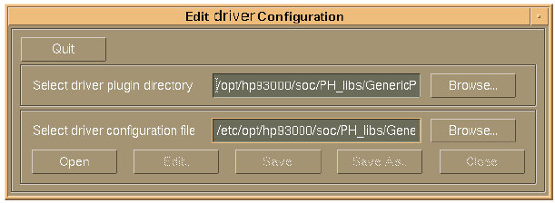
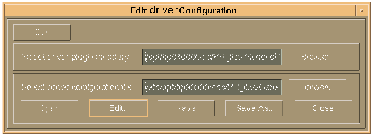
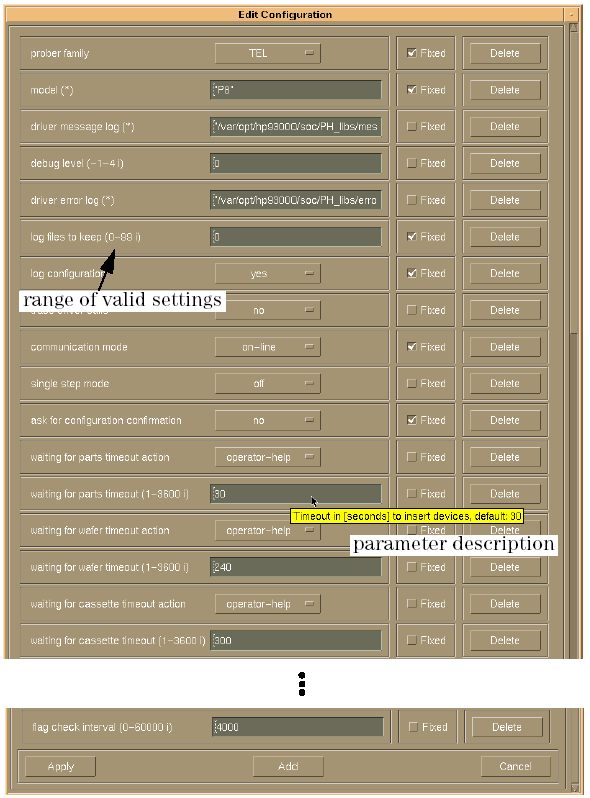
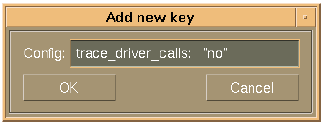

Editing a Driver Configuration File
SmarTest provides a designated editor (editSpecificConfig in the directory /opt/hp93000/soc/PH_libs/tools/bin/) to open, edit, and save a driver configuration.
Use the following command line options to open the editor:
editSpecificConfig (- equipment type) [ <plug-in> <configuration>]
equipment type: p or h (mandatory parameter)
-p starts up the editor in the mode to edit a prober driver configuration. If <plug-in> and <configuration> are not given, the editor starts up with the plug-in and the driver configuration file that will be used by the driver GenericProber at start-up.
-h starts up the editor in the mode to edit a handler driver configuration. If <plug-in> and <configuration> are not given, the editor starts up with the plug-in and the driver configuration file that will be used by the driver GenericHandler at start-up. (see Location of the Global Configuration File for details)
plug-in: (optional, but mandatory if <configuration> is given) the directory of the plug-in, of which you want to edit the configuration
example: /opt/hp93000/soc/PH_libs/GenericHandler/Synax-GPIO/
configuration: (optional, but mandatory if <plug-in> is given) the driver configuration file you want to edit
example: /etc/opt/hp93000/soc/PH_libs/GenericHandler/Synax-GPIO/config/Dual-site.cfg
The following sequence explains how to set up a prober driver configuration. You can set up a handler configuration with the editor in the same way, as the user interface, and the way the editor works are the same in both cases.
The command editSpecificConf p opens the file selection window of the editor, as shown in the figure below.

The file selection window is the first window that is brought up, when the editor is launched. This window lets you select the plug-in directory and the driver configuration file you wish to edit, and perform the common file handling.
The following sequence describes how to use the editor.
- If you want to select a plug-in directory or configuration file different from the one
displayed, click the Browse... buttons, or type in the paths in the corresponding entry
fields.
At start-up, the entry fields for the plug-in directory and the configuration file display the settings determined by the parameters provided with the command editSpecificConfig, if only the p or h option is used, the plug-in and the driver configuration file are displayed as 'undefined', and valid entries must be selected.
When the file selection window is brought up by pressing the Launch Editor button of the global configuration editor (see Editing the Global Configuration), the entry fields display the plug-in and configuration file specified in the global configuration editor.
Note If you want to generate a new driver configuration file, it is recommended to select and open an existing file, make the required changes, and use Save As. - Click Open to read the selected driver configuration file.
The editor automatically checks whether the selected file is a valid driver configuration file.
After opening, the buttons Save, Save As, and Close for handling of the driver configuration file are enabled.
Note As long as a driver configuration file is open, the Quit button is disabled.
- To edit the selected driver configuration file, click the Edit... button.
This brings up the main editor window as shown in the figure below. The window displays all configuration parameters that are defined in the selected driver configuration file, and their values.

As can be seen above, the main editor window also displays the range of valid settings for each parameter in brackets behind the parameter name (this range is defined in the attributes definition of the plug-in), and whether changes of parameters at run-time are disabled (indicated by the checked "Fixed"), or enabled ("Fixed" not checked).
When you point with the mouse to the entry field of a parameter, a short description of the parameter is displayed.
- Edit the configuration as follows:
- To change the value of a parameter, type in a new value, or select from a list of valid values.
- To delete a parameter, click the Delete button at the end of the line of the parameter. The parameter will be removed from the configuration file.
- To add a new configuration parameter, click the Add button at the bottom of the
window, then enter the new parameter in the entry field, as shown in the figure below. Use the
syntax of the examples which are provided with each parameter description in Configuration Parameters for your entry.

The parameter you want to add must be defined in the relevant attributes definition (typically, this is default attributes definition provided with the plug-in, see Handling an Attributes Definition File for details), and the given parameter setting must be in the range of the valid settings defined in the attributes definition.
- To define that a parameter cannot be changed at run-time with the function
ph_interactive_configuration (see Changing the Driver Configuration at Run-Time for more information
about this function), check "Fixed".Note Some parameters are not changeable at run-time per definition (see Configuration Parameters). It is recommended to always check "Fixed" for such a parameter. If "Fixed" is not checked, and you try to change the parameter setting using the function ph_interactive_configuration, the change will not take effect, and an error message will be generated.
- Click Apply to make your changes active, or Cancel to discard your
changes.
With the Apply command, the editor checks whether the configuration parameter settings are in compliance with the relevant attributes definition. If this is met, the main editor window is closed (the configuration remains stored internally), if not, you can chose to re-edit the wrong parameter settings, to restart editing (starting anew with all parameter settings restored to their old values), or to quit editing and discard all changes.
The Cancel button immediately closes the main editor window and discards all parameter changes you have made.
- Save or Save As the driver configuration file with the corresponding buttons of
the file selection window (see the figure in step 2).
Driver configuration files may be saved to any directory. However, it is recommended to store a file in the sub-directory of the plug-in the file is associated with. For the handler driver, the plug-in sub-directories are located in
/etc/opt/hp93000/soc/PH_libs/GenericHandler/
For the prober driver, the plug-in sub-directories are located in
/etc/opt/hp93000/soc/PH_libs/GenericProber/
Note: Skip saving, if you decide to discard the changes you have made.
- Close the driver configuration file.
After closing, you can select and open another plug-in and/or driver configuration file, or proceed with step 8.
- Close the editor by pressing the Quit button.
As the driver configuration is an ordinary ASCII file, you can also load, edit, and save the file with any text editor. However, it is recommended to always use the editor, as it ensures that the settings in the driver configuration comply with the attributes definition of the selected plug-in.
When editing the file with a text editor, mind what is said above about saving the file, and see Appendix D: Syntax of the Driver Configuration File for the file syntax and further information.